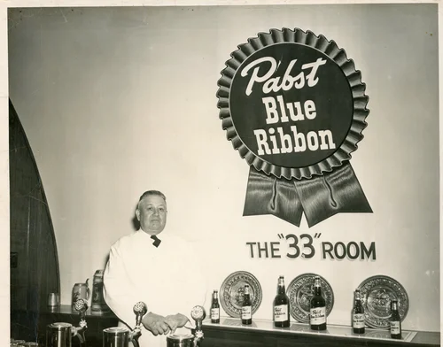
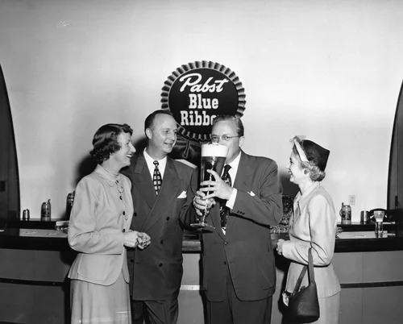
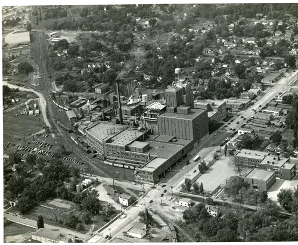

The Congenial 33 Room at The Old Pabst Brewery
The 33 Room, the primary hospitality suite at the Old Pabst Peoria Heights brewery, was dedicated on March 21, 1949. The name The 33 Room was derived from the slogan Pabst used in the 1940s: "33 Fine Brews Blended into One Great Beer".
Since its inception, visitors from around the world were welcomed to The 33 Room for hospitality after brewery tours. Many notable guests have visited over the years.
History of the Pabst Building
Premier Malt Products Co. (1924–1933)
Premier Malt Products converted the former Bartholomew Co. plant on this site into a malt syrup factory in 1925. The company produced Blue Ribbon Malt Extract and later prepared the site for brewing.
Premier-Pabst Corp. (1933–1938)
After prohibition ended in 1933 the plant converted to brewing; by 1934 Pabst beer and ale were brewed in Peoria Heights.
Pabst Brewing Co. (1939–1982)
The brewery grew through the 40s–70s. By 1949 the site had modernized facilities and The 33 Room entertained guests for nearly 33 years until the plant closed in 1982. Today the 33 Room has reemerged as a hospitality suite open to the public and available for private events.
Gallery


